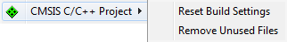

Project Context Menu
In the Project Explorer, right-click on the project name and select:
- CMSIS C/C++ Project → Reset Build Settings to set the project properties to defaults.
- CMSIS C/C++ Project → Remove Unused Files to delete files from previously selected software components.

In the Project Explorer, right-click on an item and select:
- New → Files from CMSIS Template and select the file from the next window.